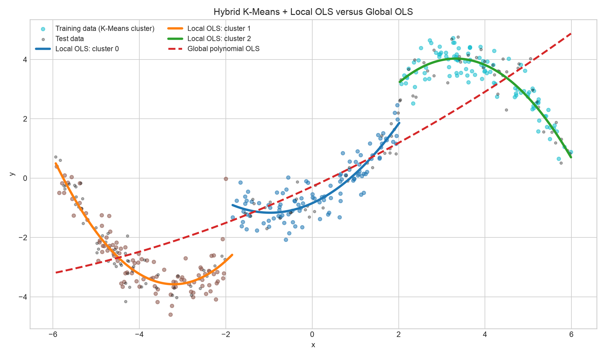

MSE ลดลงเมื่อเทียบกับ Global OLS
92.7%
Hybrid K-Means + Local OLS ติดตามรูปทรงข้อมูลที่เปลี่ยนไปตามช่วงได้ดีกว่าในตัวอย่างสาธิตนี้
โครงงานวิเคราะห์ข้อมูล · แบบจำลองถดถอย
ลองเปรียบเทียบสมการเดียวที่ครอบคลุมข้อมูลทั้งหมด กับสมการย่อยที่เรียนรู้จากข้อมูลแต่ละช่วง โครงงานนี้ใช้ K-Means แบ่งบริเวณ แล้วให้ Local OLS อธิบายแนวโน้มของแต่ละบริเวณ
แนวคิดหลัก แทนที่จะฝืนใช้เส้นเดียว ให้แต่ละช่วงมีสมการที่เหมาะกับรูปทรงของตัวเอง
ผลการทดลอง
ประเมินด้วยข้อมูลทดสอบ 135 ตัวอย่างที่แบบจำลองไม่เคยเห็นระหว่างการฝึก
MSE ลดลงเมื่อเทียบกับ Global OLS
92.7%
Hybrid K-Means + Local OLS ติดตามรูปทรงข้อมูลที่เปลี่ยนไปตามช่วงได้ดีกว่าในตัวอย่างสาธิตนี้
ยิ่งต่ำยิ่งดี · Global OLS ได้ 2.5298
ยิ่งต่ำยิ่งดี · Global OLS ได้ 1.5905
ยิ่งใกล้ 1 ยิ่งดี · Global OLS ได้ 0.6429

เส้น Local OLS ถูก fit แยกกัน จึงอาจมีรอยต่อเมื่อเปลี่ยนกลุ่ม ส่วนเส้น Global OLS เป็นสมการเดียวตลอดช่วง
วิธีทำงาน
แบบจำลองผสมต่อการจัดกลุ่มที่ไม่ใช้คำตอบ เข้ากับสมการพหุนามที่อ่านค่าได้
สร้างข้อมูลสังเคราะห์ 450 จุด โดยแนวโน้มเปลี่ยนไปสามช่วงและมีสัญญาณรบกวน
ฝึก 315 · ทดสอบ 135K-Means ใช้เฉพาะตำแหน่ง x เพื่อแบ่งช่วงข้อมูล ศูนย์กลางกลุ่มหาได้จากชุดฝึก
k = 3แต่ละกลุ่มมีสมการกำลังสองของตัวเอง ช่วยให้ความชันและความโค้งต่างกันได้
ŷ = β₀ + β₁x + β₂x²ข้อมูลใหม่ถูกส่งไปยังกลุ่มที่ใกล้ที่สุด แล้วใช้สมการของกลุ่มนั้น เปรียบเทียบกับ OLS สมการเดียว
train/test = 70/30สมการที่เรียนรู้
กลุ่มเรียงจากศูนย์กลาง x ด้านซ้ายไปด้านขวา จำนวนตัวอย่างคือข้อมูลฝึกของแต่ละกลุ่ม
ข้อมูลฝึก 102 ตัวอย่าง · กลุ่ม 1
ข้อมูลฝึก 106 ตัวอย่าง · กลุ่ม 0
ข้อมูลฝึก 107 ตัวอย่าง · กลุ่ม 2
ส่วนสมการเดียว: Global OLS ใช้ค่าสัมประสิทธิ์ชุดเดียวกับข้อมูลทุกช่วง
เลือกใช้อย่างเข้าใจ
แบบจำลองที่เหมาะสมขึ้นกับโครงสร้างข้อมูลและสิ่งที่ต้องการอธิบาย
สำรวจโครงงานต่อ
ไฟล์เหล่านี้สร้างจากโปรแกรมเดียวกับที่ใช้ในการทดลอง
ติดตั้งไลบรารีตามรายการของโครงงาน แล้วสั่งรันไฟล์หลัก
python3 -m pip install -r requirements.txt
python3 hybrid_kmeans_ols.py